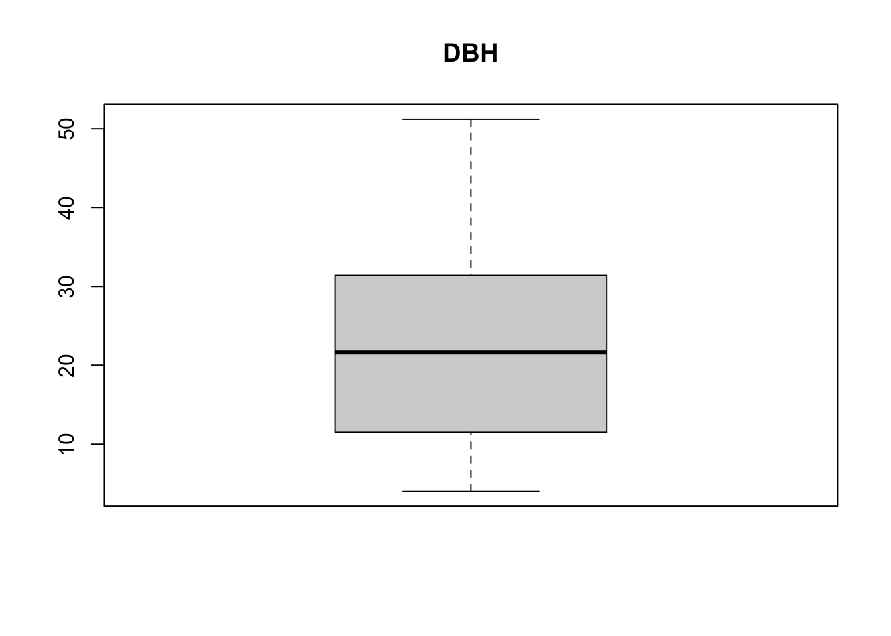
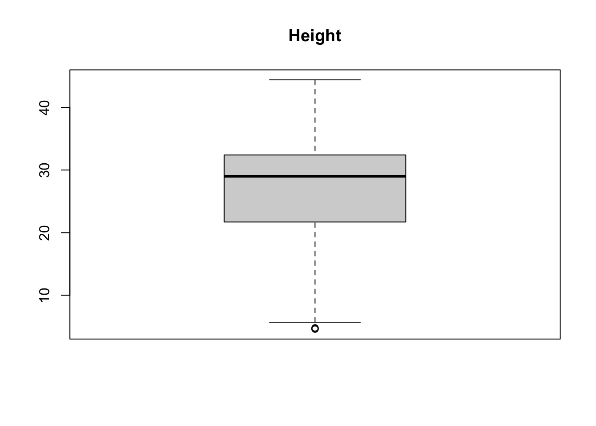

In this exercise you will practice common steps of the data preparation procedure using a dataset that was gathered in a forest in Switzerland.
The main steps are as follows (to solve the tasks, please carefully read the detailed instructions and hints below):
Read the provided datasets treedata.csv and species.csv to R.
Have a look at the dataset properties.
Find values that prevent a column you expect to be numeric to do so.
Does the dataset contain NA-values in height? How many?
Have a look at the data: Check for implausible values. For now, remove these values.
Add the species names to the dataset.
Create a new dataset containing only trees with both, height and dbh measurements.
Are there any correlations within the new dataset?
Remove all trees with rem = F4 from the dataset
Calculate mean dbh by species.
To thorougly check the dataset and perform the operations, you will need the following functions:
read.csv(): Check the different options using ?read.csv
str(): Structure of an object
table(): Check the optional arguments!
merge(): Combine to data.frames
as.character(): Change a vector’s class to character
as.numeric(): Change a vector’s class to numeric.
%in%
is.na()
max()
summary()
complete.cases()
cor.test()
%>% and group_by() and summarize() from the dlyr package (check demonstration Part 2)
Regarding the solutions, note we don’t expect you to come up with exactly this code - there are many ways to solve the problem. The solutions just give you an idea of a possible solution
9.1.1 1. Read data
Read the provided datasets treedata.csv and species.csv to R. Use the option stringsAsFactors = FALSE in the function read.csv.
Read the dataset treedata.csv and call it treedata. It has the following columns:
species_code: tree species code
dbh: diameter at breast height (1.3 m) [cm]
height: total height of the tree [m]. Measured only on a subset of trees.
rem: coded values, containing remarks
Read the dataset species.csv and call it species. The dataset consists of the following columns:
species_code: tree species code (matching the one used in treedata.csv)
species_scientific: Scientific species name
species_english: English species name
Solution
First, you read in the file using read.csv. You have to specify the correct separator for your dataset, here this is “;”.
The data.framedat contains 4 columns: species, dbh (diameter at breast height [cm]), height [m] and bem1, a remark.
We expect the following formats:
column
format
species
character
dbh
numeric
height
numeric
rem
factor
Using str we get an overview of the structure of a dataset:
str(treedata)
'data.frame': 287 obs. of 4 variables:
$ species_code: int 121 121 411 411 411 431 411 411 411 121 ...
$ dbh : chr "19.3" "21.3" "43" "25.8" ...
$ height : num NA NA 37.7 NA 34.4 44.4 NA NA NA NA ...
$ rem : chr "" "" "P7" "F2" ...
Column dbh is a character, altough we would have expected this one to be class numeric. This indicates, that a letter or special characters are in that column (we do not want these to be in there at all!).
9.1.3 3. Turn character to numeric
One column, which we expect to be numeric, is of class character. Find the value causing this column to be character, set it to NA and turn the column into class numeric.
Note that using ‘is.numeric()’ is not enough, if the column is a factor. This may be the case if you have used the option stringAsFactor = T in read.csv or an older version of R. Use a combination of ‘as.character()’ and ‘as.numeric()’ in that case.
Solution
We suspect dbh to contain a character and we want to remove this. With the function ‘table()’, we can check all existing values in the column. There seems to be an ‘X’ in the data.
A more advanced option would be to use grepl. If we are using the solution above, we will only find the value if it is exactly one character. Things get a bit more complicated, if we have special characters, e.g, a *.
'data.frame': 287 obs. of 4 variables:
$ species_code: int 121 121 411 411 411 431 411 411 411 121 ...
$ dbh : chr "19.3" "21.3" "43" "25.8" ...
$ height : num NA NA 37.7 NA 34.4 44.4 NA NA NA NA ...
$ rem : chr "" "" "P7" "F2" ...
Just removing the ‘X’ does not turn a character to numeric! R provides the function as.numeric, which might be of use in this case.
As only on a subset of the trees, height has been measured, we expect this column to contain NA-values.
The dataset contains 221 NA.
9.1.5 5. Implausible values
The dataset contains some implausible values (completely out of range!). Find and replace these values with NA.
Solution
What values are implausible? The dataset contains different species. A value which is plausible for species A might be implausible for species B. However, for now, we will not go into the details here.
There seems to be one outlier in both datasets which can be seen as implausible: No tree is more than 100 m of height and no tree has a diameter > 20 m (These values can be considered implausible for trees in Switzerland).
We will now remove these values from our dataset by setting them to NA - this might not always be the best option, there are also statistical models that can account for such errors!
treedata$dbh[treedata$dbh >500] <-NAtreedata$height[treedata$height >50] <-NAboxplot(treedata$dbh, main ='DBH')

boxplot(treedata$height, main ='Height')

9.1.6 6. Add species names
Add the species names from the species dataset to the treedata dataset. Hint: ?merge
Solution
Use merge to add species names to the dataset treedata. For adding only one column, match is a helpful function.
treedata =merge(treedata, species, by ="species_code")head(treedata)
species_code dbh height rem species_scientific species_english
1 101 8.1 5.7 Picea abies (L.) H. Karst. Norway Spruce
2 101 10.4 NA Picea abies (L.) H. Karst. Norway Spruce
3 101 5.2 NA S0 Picea abies (L.) H. Karst. Norway Spruce
4 101 9.6 NA Picea abies (L.) H. Karst. Norway Spruce
5 101 8.2 6.2 Picea abies (L.) H. Karst. Norway Spruce
6 101 7.4 6.1 Picea abies (L.) H. Karst. Norway Spruce
For calculating summary statistics, the dplyr package is really helpful. It is part of the tidyverse environment, which was designed for data science. If you work with large and complex datasets or if you have to derive many new variables, I really recommend that you have a look at this. Also, the syntax for dplyr is quite intuitive.
For help on this, check the demonstration of Part 2 where we calculated summary statistics for groups using the dplyr package!
Solution
library(dplyr)
Attaching package: 'dplyr'
The following objects are masked from 'package:stats':
filter, lag
The following objects are masked from 'package:base':
intersect, setdiff, setequal, union